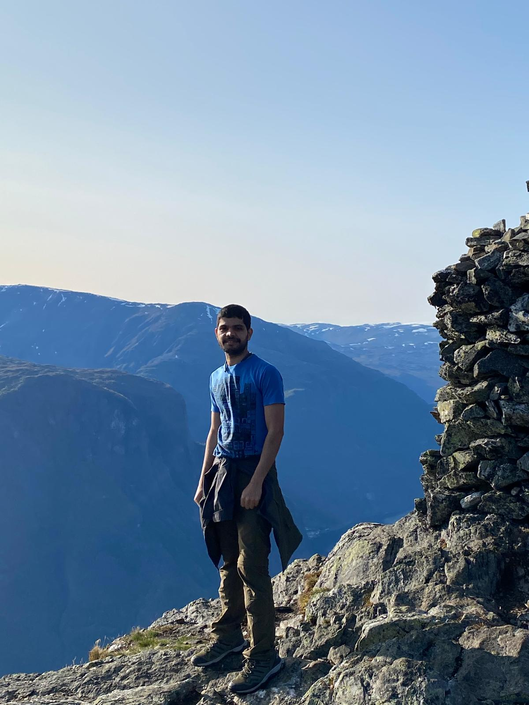
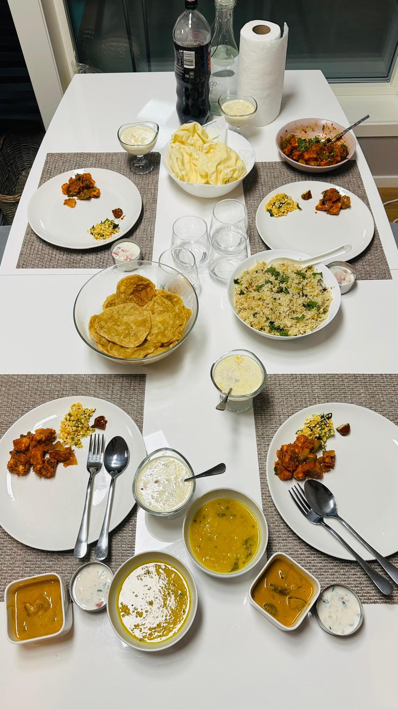

About Me
Hi, I'm Naveena Shetty, an experienced Cloud/DevOps and Software Engineer passionate about automation, cloud computing, and software development.
With expertise in multiple cloud providers, Terraform, Kubernetes, CI/CD pipelines, and scalable infrastructure, I strive to build efficient and innovative solutions.
Tech Stack
- Programming & Scripting: Python, Java, Shell Script
- CI/CD: GitLab, TeamCity, AWS code pipeline
- Cloud Providers: AWS, GCP
- Containerization & Orchestration: Kubernetes, Docker, Helm, ArgoCD
- Infrastructure as Code: Terraform, Ansible
- Monitoring & Logging: Prometheus, Grafana, ELK/EFK, Jaeger
- Security & Policy Management: Kyverno
- Version Control: GitHub, GitLab
Resume
Download my resume: Click here
Connect with me on LinkedIn
MyWork in GitHub: GitHub
MyWork in Gitlab: GitLab
My Interests & Hobbies
Hiking & Exploring Nature
I love being in the mountains, discovering new trails, and experiencing the beauty of nature. Hiking helps me refresh my mind and stay active.
Cooking
Cooking is my way of unwinding. Experimenting with new recipes and flavors excites me, and I enjoy making delicious meals for family and friends.
Playing Cricket
Cricket has been a passion of mine since childhood. Whether playing with friends or following international matches, I love the thrill of the game.
Traveling
Exploring different cultures and places gives me a fresh perspective on life. Traveling allows me to meet new people, try new foods, and create unforgettable memories.